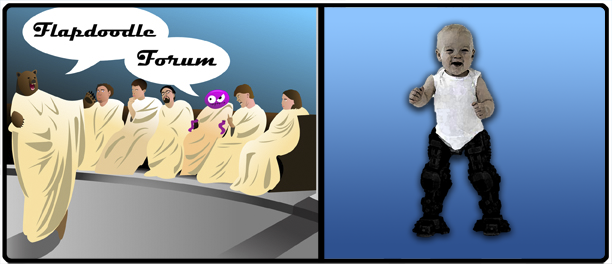

Ready, set, GO! Race the lab grown bionic limbed baby as it rockets away at 45 mph, leaving you and all humanity in its dust. Don't be too sad, perhaps Canada's ghosts will take pity on you.
Other Mentions: The Flapdoodle conspiracy message, running too damn fast, designer babies, Gattica, and P. T. Barnum.
Edited by Aaron Spadaro